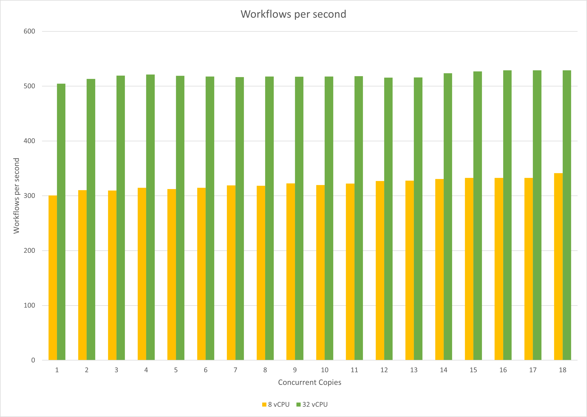
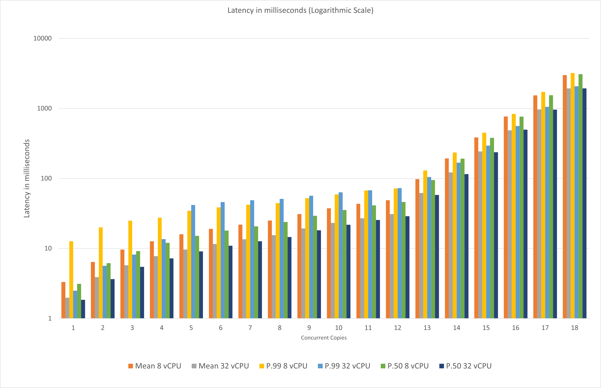

性能测试
对 Workflow-Core 版本 3.7.0 进行了测试，以评估其性能。使用的设置是具有默认 MemoryPersistenceProvider 持久性提供程序的单节点。
方法论
- 测试环境-在以下两个环境中依次运行测试，以了解较低与较高硬件配置下的工作流核心性能。
- 较低的配置
- 核心数：8 个虚拟 CPU（标准 _D8S_V3）
- 内存：32 GB
- 操作系统：Linux Ubuntu 20.04
- 网络 6
- 更高的配置
- 核心数：32 个虚拟 CPU（标准 _D32AS_V4）
- 内存：128 GB
- 操作系统：Linux Ubuntu 20.04
- 网络 6
- 测试工作流程：工作流程由 3 个基本步骤组成。选择这 3 个简单的步骤是为了以最小但足够的复杂性测试工作流引擎的性能，并避免任何外部依赖性。
- 步骤 1：生成随机数一个介于 1 到 10 之间的值，并在标准输出上打印它。
- 第二步：条件步骤
- 步骤 2.1：如果步骤 1 中生成的值>5，则在标准输出上打印它。
- 步骤 2.2：如果步骤 1 中生成的值 <=5，则在标准输出上打印它。
- 步骤 3：在标准输出上打印再见消息。
- 测试工具：
-
NBomber作为性能测试框架，以 C# 控制台应用程序为基础。
-
测试场景：
- 每种类型的测试运行执行 20 分钟。
- 使用了型号保持不变副本的轰炸机载荷模拟。这种类型的模拟在特定时期内保持恒定数量的场景副本（实例）。
- 测试并行副本 [1，2，3，4，5，6，7，8，10，12，14，16，32，64，128，256，512，1024]。
- 例如，如果我们采用并发副本 =4，持续时间 =20 分钟，这意味着 nBomber 将确保我们有 4 个测试工作流实例并行运行 20 分钟。
结果
- 每秒工作流数-下表显示了在并发副本数量不断增加的两个不同环境中，我们每秒能够执行的工作流数。
| 并发拷贝 | 8 vCPU | 32 vCPU |
|---|---|---|
| 1 | 300.6 | 504.7 |
| 2 | 310.3 | 513.1 |
| 3 | 309.6 | 519.3 |
| 4 | 314.7 | 521.3 |
| 5 | 312.4 | 519.0 |
| 6 | 314.7 | 517.7 |
| 7 | 318.9 | 516.7 |
| 8 | 318.4 | 517.5 |
| 10 | 322.6 | 517.1 |
| 12 | 319.7 | 517.6 |
| 14 | 322.4 | 518.1 |
| 16 | 327.0 | 515.5 |
| 32 | 327.7 | 515.8 |
| 64 | 330.7 | 523.7 |
| 128 | 332.8 | 526.9 |
| 256 | 332.8 | 529.1 |
| 512 | 332.8 | 529.1 |
| 1024 | 341.3 | 529.1 |

- 延迟-显示两个不同环境中的平均 P99 和 P50 延迟（以毫秒为单位），其中并发副本的数量不断增加。
| 并发拷贝 | Mean 8 vCPU | Mean 32 vCPU | P.99 8 vCPU | P.99 32 vCPU | P.50 8 vCPU | P.50 32 vCPU |
|---|---|---|---|---|---|---|
| 1 | 3.32 | 1.98 | 12.67 | 2.49 | 3.13 | 1.85 |
| 2 | 6.43 | 3.89 | 19.96 | 5.67 | 6.17 | 3.65 |
| 3 | 9.67 | 5.77 | 24.96 | 8.2 | 9.14 | 5.46 |
| 4 | 12.7 | 7.76 | 27.44 | 13.57 | 12.02 | 7.22 |
| 5 | 15.99 | 9.63 | 34.59 | 41.89 | 15.14 | 9.08 |
| 6 | 19.05 | 11.58 | 38.69 | 45.92 | 18.02 | 10.93 |
| 7 | 21.94 | 13.54 | 42.18 | 48.9 | 20.72 | 12.66 |
| 8 | 25.11 | 15.45 | 44.35 | 51.04 | 23.92 | 14.54 |
| 10 | 30.98 | 19.33 | 52.29 | 56.64 | 29.31 | 18.21 |
| 12 | 37.52 | 23.18 | 59.2 | 63.33 | 35.42 | 21.82 |
| 14 | 43.44 | 27.01 | 67.33 | 67.58 | 41.28 | 25.55 |
| 16 | 48.93 | 31.03 | 72.06 | 72.77 | 46.11 | 28.93 |
| 32 | 97.65 | 62.03 | 130.05 | 104.96 | 94.91 | 58.02 |
| 64 | 193.53 | 122.24 | 235.14 | 168.45 | 191.49 | 115.26 |
| 128 | 384.63 | 243.74 | 449.79 | 294.65 | 379.65 | 236.67 |
| 256 | 769.13 | 486.82 | 834.07 | 561.66 | 766.46 | 498.22 |
| 512 | 1538.29 | 968.02 | 1725.44 | 1052.67 | 1542.14 | 962.05 |
| 1024 | 2999.36 | 1935.32 | 3219.46 | 2072.57 | 3086.34 | 1935.36 |
